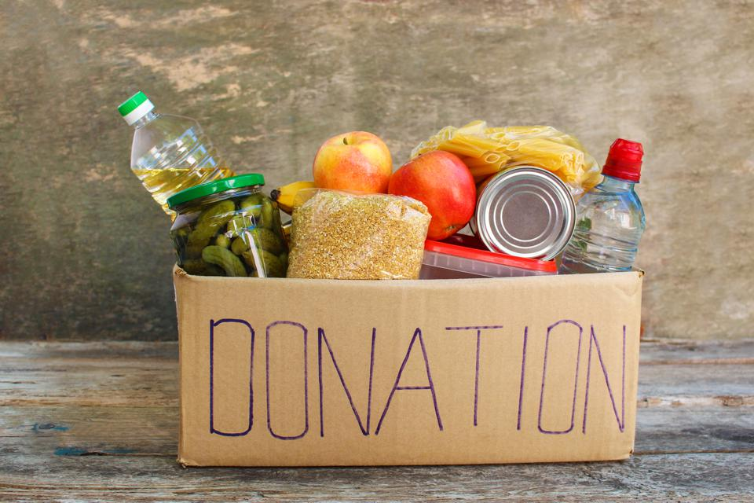
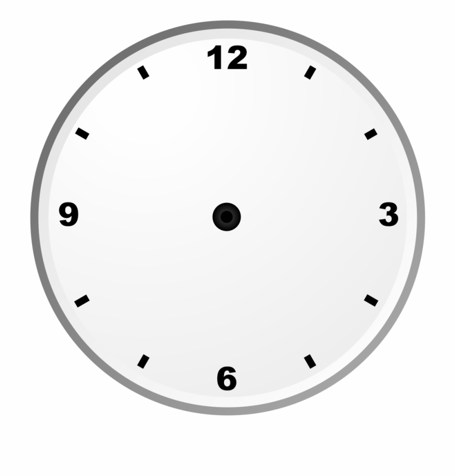
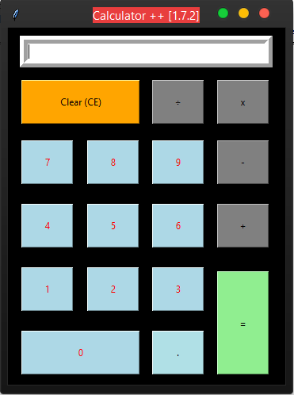

MY BLOG
Welcome to the blog of Geetanjali Maraskole
ABOUT ME
Hello, myself geetanjali maraskole I am a computer science student at maulana azad national institute of technology cuurently doing my btech in computer science and engineering.My interest are programming,playing chess,learning new things,reading books and reading stories.I like to know people so,whenever i get a chance i always try to have a good communication and learn from others experience...well no doubt its a great way to learn.I made two projects untill now one is a simple smart calculator where you just type your operations in word like add ine and two and the calculator gives you the answers..cool huh i named it mars..so i just call her and ask her to do my calculations...and my second project was related to web developement and database manupulation and creation using mysql,Its a simple system where whenever someone wishes to donate something they can give the information through it to the relevant ngo's and the ngo's can then contact them later...hell yeah it took a lot to finish..inspite of all this i have an interest in playing chess too and happy to share i became a 1600 rated player in lichess..finally and i also went for inter nit chess tournament it was a really good experience may be it was my first time so couldn't perform that good..our whole team was new...but will surely try again..and always keep on trying..as i said i like to read books..you know what was my first book?..it was gullivers travels...i loved it the story just took me so much into it..and it also created an interest in me to read even more..well you must be wondering what i do during my free time..inspite of coding,playing chess and reading books..well i do give water to plants,sometimes cook,visit granny..ya her house is near my house,and last but not the least watch shinchan ya..that one is my favourite..i always try to explore new things in life..that makes it even more interesting...so keep scrolling for more content folks!!!
~ Nit-B cse student
~ Programmer
~ Chess player
~ Book worm
~ Nature lover
Projects and accomplishments
-
Facial expression recognition and recommendation
An m.l based project(cnn) which detects emotion through facial expression and recommend media. -
Education Buddy
A website that provides school students relevant links for studying. -
Salary prediction
An m.l based project(linear regression) which predicts salary on the basis of experience. -

Charity Management
A smart way to save time and have the work done efficiently.it's an interface between ngo's and donors,built using mysql,html,css,php. -

Html clock
An analog clock built using html,css,javascript. -

Smart calculator
A calculator that does calculations,when problems are asked in the langauge english just the way we speak.built using python -
 Snake Game
Snake Game
A simple game snake built using python -
 inter nit chess
inter nit chess
memeber of chess team of college and took part in inter-nit 2019

Skills
C++ Data structures and algorithms C Python Dbms